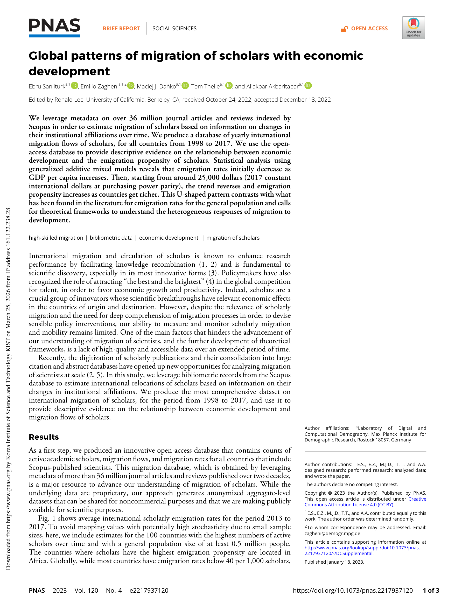
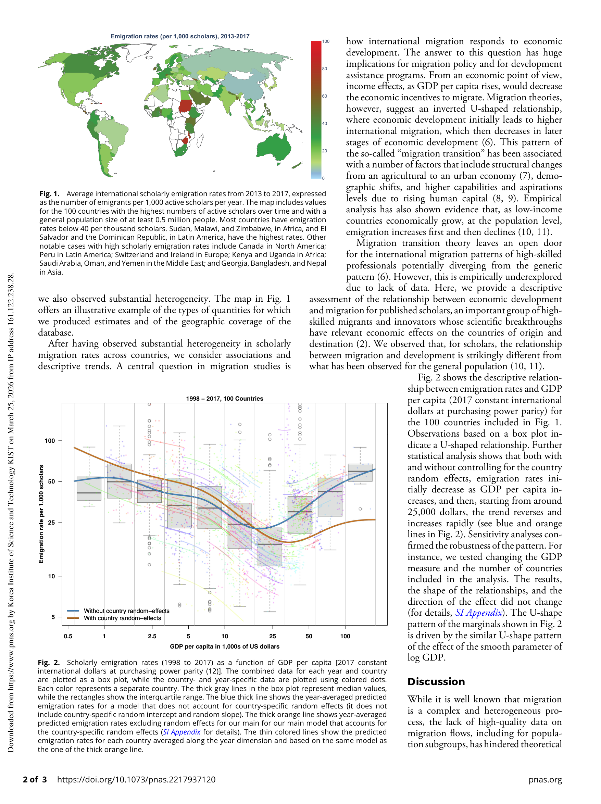

저자: Ebru Sanliturk, Emilio Zagheni, Maciej J. Danko, Tom Theile, Aliakbar Akbaritabar | 날짜: 2023 | Journal: PNAS | DOI: 10.1073/pnas.2217937120

Figure 1
학자들의 국제 이주율과 경제 발전(GDP per capita) 사이에는 U자형 관계가 존재한다. 이주율은 GDP가 증가함에 따라 처음에는 감소하다가 약 25,000달러(2017년 PPP 기준)부터 반전하여 다시 증가한다. 이는 일반 인구에서 관찰되는 역U자형(inverted-U) "이주 전환(migration transition)" 패턴과 정반대이다.

Figure 2
총평: 3,600만 편 서지 데이터를 활용하여 학자 이주의 U자형 발전-이주 관계를 발견한 중요한 기여이나, Brief Report의 제약으로 메커니즘 분석이 부족하고, 이주 방향·분야별 이질성·인과 분석은 후속 과제로 남아 있다.